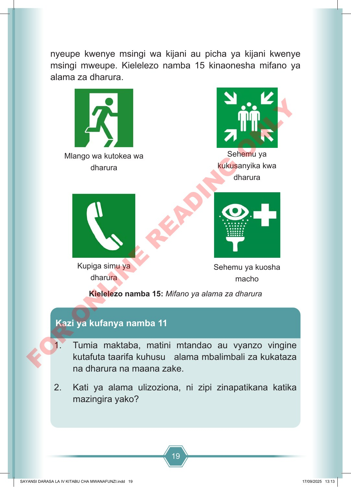

19 nyeupe kwenye msingi wa kijani au picha ya kijani kwenye msingi mweupe. Kielelezo namba 15 kinaonesha mifano ya alama za dharura. Mlango wa kutokea wa dharura Sehemu ya kukusanyika kwa dharura Kupiga simu ya dharura Sehemu ya kuosha macho Kielelezo namba 15: Mifano ya alama za dharura 1. Tumia maktaba, matini mtandao au vyanzo vingine kutafuta taarifa kuhusu alama mbalimbali za kukataza na dharura na maana zake. 2. Kati ya alama ulizoziona, ni zipi zinapatikana katika mazingira yako? Kazi ya kufanya namba 11 SAYANSI DARASA LA IV KITABU CHA MWANAFUNZI.indd 19 SAYANSI DARASA LA IV KITABU CHA MWANAFUNZI.indd 19 17/09/2025 13:13 17/09/2025 13:13 F O R O N L I N E R E A D I N G O N L Y